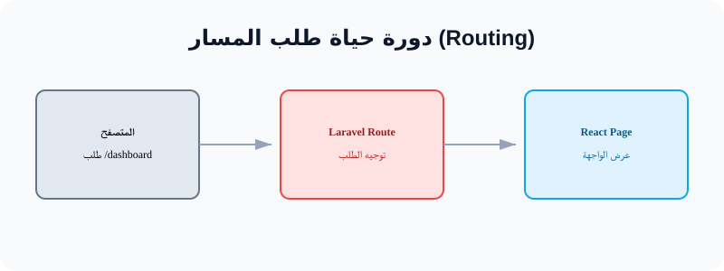
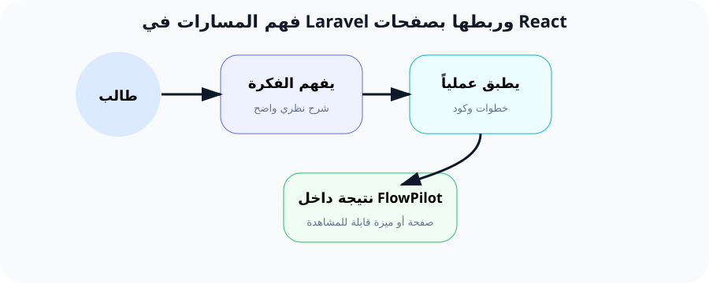

فهم المسارات (Routing) وكيف يرسل Laravel البيانات لـ React
"المسار هو الباب الذي يدخل منه المستخدم لتطبيقك. لنتعلم كيف نبني أبوابنا الذكية."
لماذا نحتاج الـ Routing؟
عندما تكتب facebook.com/profile، كيف يعرف الفيسبوك أنه يجب عرض صفحتك الشخصية وليس صفحة الأخبار؟ هذا هو دور الـ Routing. هو نظام توجيه يربط "الرابط" الذي يطلبه المستخدم بـ "الكود" الذي يجب أن يعمل.
بدون مسارات، سيكون تطبيقنا عبارة عن صفحة واحدة صماء. في مشروعنا FlowPilot، سنحتاج لمسارات كثيرة مثل: مسار لعرض المهام، ومسار لإنشاء مشروع جديد، ومسار لتعديل البيانات الشخصية.
كيف يعمل Inertia Response؟
في Laravel التقليدي، كنا نعيد ملف Blade (HTML عادي). لكننا الآن نستخدم React. هنا يأتي دور Inertia::render().
هذه الدالة تخبر Laravel: "توقف، لا ترسل HTML عادياً، بل أرسل البيانات لصفحة React الفلانية لتقوم هي بالعرض".
'projects' => $projects
]);
مثال لتقريب الفكرة (المجمع التجاري)
تخيل تطبيق FlowPilot كـ "مجمع تجاري" ضخم.
- الـ Route هو اللوحات الإرشادية عند المدخل التي تخبرك: "للوصول لقسم الملابس اذهب يميناً، ولقسم المطاعم اصعد للدور الثاني".
- المتصفح هو الزائر الذي يتبع اللوحات.
- Inertia هو الموظف الذي يفتح لك باب القسم المخصص ويجهز لك البضائع (البيانات) لتراها بشكل أنيق.
في مشروع FlowPilot
سنبدأ بإنشاء مسار لوحة التحكم /dashboard. هذا المسار سيكون هو "المركز" الذي يرى فيه المستخدم ملخصاً لمشاريعه ومهامه. سنربطه بصفحة React تسمى Dashboard.jsx.
مخططات توضيحية

مخطط دورة الطلب

التشبيه البصري (المجمع التجاري)
التطبيق العملي خطوة بخطوة
الخطوة 1: تعريف المسار في Laravel
المكان: ملف routes/web.php
use Inertia\Inertia;
Route::get('/dashboard', function () {
return Inertia::render('Dashboard');
});
شرح: قمنا بربط الرابط /dashboard بصفحة React التي تحمل اسم Dashboard.
الخطوة 2: إنشاء صفحة React
المكان: مجلد resources/js/Pages/Dashboard.jsx
export default function Dashboard() {
return (
<div className="p-8">
<h1 className="text-2xl font-bold">لوحة تحكم FlowPilot</h1>
</div>
);
}